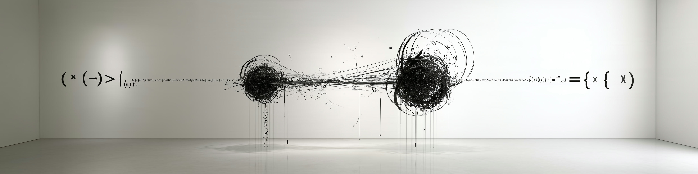

3 + 47
Clarity in thought, like elegance in mathematics, arises not from abundance but from precision.
— Blaise Pascal
Operatoren verknüpfen Werte zu Ausdrücken, und Python wertet sie nach einer festen Rangfolge aus, nicht von links nach rechts. Das Ergebnis hängt vom Datentyp der Operanden ab: Derselbe Operator kann Zahlen addieren, Strings verbinden oder bei Mengen eine Differenz bilden. Wir lernen deshalb, Ausdrücke Schritt für Schritt auszuwerten, auch wenn sie von einem KI-Assistenten stammen.
Bei der Programmierung schreibt man Code, der formal aus Syntax und Semantik besteht. Dieser Code wird weiter unterteilt in:
Anweisung
Eine Anweisung (engl. statement) stellt eine in der Syntax einer Programmiersprache formulierte einzelne Vorschrift dar, die im Programm nacheinander auszuführen ist.
Beispiel: x = 5 weist der Variablen x den Wert 5 zu.
Ausdrücke
Eine besondere Form von Anweisungen sind Ausdrücke (engl. expression), die immer einen Wert zurückgeben und damit einen Datentyp haben.
Beispiele: 3 + 4 ergibt 7 (int), "Hallo " + "Welt" ergibt einen str.
Operator
Ein Operator ist ein Teil von Ausdrücken und ein Symbol oder Schlüsselwort, das dem Compiler oder Interpreter mitteilt, eine bestimmte Operation auf Werte auszuführen.
Beispiel: In 3 + 4 ist + der Operator, 3 und 4 sind die Operanden.
Die Beispiele lassen sich direkt auswerten:
3 + 47"Hallo " + "Welt"'Hallo Welt'Bei einer einfachen Variablenzuweisung steht der Ausdruck zum Beispiel auf der rechten Seite des Zuweisungsoperators und der Variablenname auf der linken Seite:
Variablenname = AusdruckIn dieser Sitzung lernen wir, solche Ausdrücke zu lesen und Schritt für Schritt auszuwerten.
Arithmetische Operatoren führen die bekannten mathematischen Operationen aus. Sie arbeiten mit numerischen Datentypen und werden mit numerischen Werten verwendet, um allgemeine mathematische Operationen auszuführen.
| Operator | Beispiel | Wirkung |
|---|---|---|
| Addition | x + y |
10 + 3 (Ergebnis: 13) |
| Subtraktion | x - y |
10 - 3 (Ergebnis: 7) |
| Multiplikation | x * y |
10 * 3 (Ergebnis: 30) |
| Division | x / y |
10 / 3 (Ergebnis: 3.3333…) |
| Ganzzahl-Division | x // y |
10 // 3 (Ergebnis: 3) |
| Modulo-Operator | x % y |
10 % 3 (Ergebnis: 1) |
| Potenzierung | x ** y |
10 ** 3 (Ergebnis: 1000) |
Bei Divisionen lohnt sich ein genauer Blick auf den Unterschied zwischen / und //: 7 / 3 ergibt 2.333..., während 7 // 3 zu 2 abrundet. Bei negativen Zahlen wird Richtung minus unendlich gerundet, daher ist -7 // 3 gleich -3 und nicht -2.
Der Ausdruck x ** 2 - 3 * x + 1 kombiniert Potenzierung, Multiplikation, Subtraktion und Addition. Dafür ist es wichtig, zuerst die Operatorrangfolge zu erkennen und danach die Zwischenschritte nacheinander auszuwerten: Für x = 5 ergibt sich 25 - 15 + 1 = 11.
Zuweisungsoperatoren weisen Variablen Werte zu. Python verwendet für alle arithmetischen Operatoren die abgekürzte Zuweisung, es gibt jedoch keine Inkrementierung oder Dekrementierung wie in anderen Sprachen.
Bei der Zuweisung x = y wird der Wert der Variablen y (rechte Seite) der Variablen x (linke Seite) zugewiesen. Bei abgekürzten Zuweisungen wird jeweils eine Operation auf dem Wert einer Variablen ausgeführt und dieser neue Wert erneut der Variablen zugewiesen.
| Operator | Beispiel | Wirkung |
|---|---|---|
| Zuweisung | x = y |
Variable x erhält den Wert y |
| Abkürzende Addition | x += 4 |
x = x + 4 # Variablen x wird um 4 erhöht |
| Abkürzende Multiplikation | x *= 4 |
x = x * 4 # Variablen x wird mit 4 multipliziert |
| Abkürzende Division | x /= 4 |
x = x / 4 # Variablen x wird durch 4 dividiert |
| Abkürzende Ganzzahl-Division | x //= 4 |
x = x // 4 # Variablen x wird durch 4 ohne Rest dividiert |
| Abkürzende Modulo | x %= 4 |
x = x % 4 # Der Rest der Division von Variablen x durch 4 |
Operatoren werden in Programmiersprachen verwendet, um zwei oder mehrere Werte oder Variablen miteinander zu verknüpfen. Die arithmetischen Operatoren +, -, *, / aus der Mathematik gibt es auch in Python.
a = 1 + 1
a # 22Die Operationen funktionieren genauso mit Variablen oder gemischt.
a = a + 1
a # 33In diesem Beispiel ist die erste Eingangsvariable a identisch mit der Ergebnisvariablen. In diesem Fall bietet Python auch eine Kurzform an, bei der der Operator direkt vor dem Zuweisungsoperator = steht.
a += 1
a # 44a *= 2
a # 88Hierbei bestimmen Klammern auch die Berechnungsreihenfolge, genauso wie in der Mathematik, und können das Ergebnis beeinflussen. Daher sind die folgenden beiden Ausdrücke nicht identisch:
c1 = (6 + a) * (-2)
c1 # -28-28c2 = 6 + a * -2
c2 # -10-10Vergleichsoperatoren vergleichen zwei Werte und liefern wahr oder falsch als Ergebnis. Zum Beispiel testet a == b ob a gleich b ist, und liefert je nachdem wahr oder falsch zurück, und a != b testet, ob a ungleich b ist.
Bei der Zuweisung x = y wird der Wert der Variablen y (rechte Seite) der Variablen x (linke Seite) zugewiesen. Vergleichsoperatoren sehen ähnlich aus, verändern aber keine Variable, sondern liefern nur einen Wahrheitswert.
| Operator | Beispiel | Wirkung |
|---|---|---|
| Gleichheitsvergleich | x == y |
wahr, wenn x gleich y ist |
| Ungleich | x != y |
wahr, wenn x ungleich y ist |
| Größer | x > y |
wahr, wenn x größer als y ist |
| Kleiner | x < y |
wahr, wenn x kleiner als y ist |
| Größer gleich | x >= y |
wahr, wenn x größer gleich y ist |
| Kleiner gleich | x <= y |
wahr, wenn x kleiner gleich y ist |
Identitätsoperatoren vergleichen Objekte. Sie prüfen, ob zwei Variablen auf dasselbe Objekt im Speicher zeigen. x is y gibt wahr zurück, wenn beide Variablen dasselbe Objekt referenzieren.
| Operator | Beispiel | Wirkung |
|---|---|---|
| Identität | x is y |
wahr, wenn beide Variablen dasselbe Objekt sind. |
| Nicht gleich | x is not y |
wahr, wenn die Variablen nicht dasselbe Objekt sind. |
Ein gutes Gegenbeispiel ist eine Liste mit gleichem Inhalt. b verweist auf dieselbe Liste wie a, c ist dagegen eine zweite Liste mit gleichem Inhalt:
a = [1, 2, 3]
b = a
c = [1, 2, 3]a is bTruea is cFalseObwohl a und c verschiedene Objekte sind, haben sie denselben Inhalt:
a == cTrueLogische Operationen lassen sich gut an einer alltäglichen Auswahl erklären. Wir suchen einen Stuhl und beschreiben unseren Wunsch mit zwei Aussagen: A ist „Der Stuhl ist aus Holz“, B ist „Der Stuhl ist braun“. Je nachdem, wie wir A und B verknüpfen, passen andere Stühle. Ein Haken im Ergebnis bedeutet, dass der Stuhl unseren Wunsch erfüllt, ein Kreuz, dass er ihn nicht erfüllt.
Ich will einen Stuhl, der aus Holz ist und braun ist. Das Ergebnis ist wahr, wenn beide Eingänge wahr sind.
a and b| Stuhl | A: aus Holz | B: braun | A AND B |
|---|---|---|---|
 Grün & Plastik |
Falsch (0) | Falsch (0) | |
Braun & Plastik |
Falsch (0) | Wahr (1) |  |
Grün & Holz |
Wahr (1) | Falsch (0) |  |
Braun & Holz |
Wahr (1) | Wahr (1) |  |
Ich will einen Stuhl, der aus Holz ist oder braun ist. Das Ergebnis ist wahr, wenn mindestens ein Eingang wahr ist.
a or b| Stuhl | A: aus Holz | B: braun | A OR B |
|---|---|---|---|
Grün & Plastik |
Falsch (0) | Falsch (0) | |
Braun & Plastik |
Falsch (0) | Wahr (1) | |
Grün & Holz |
Wahr (1) | Falsch (0) | |
Braun & Holz |
Wahr (1) | Wahr (1) | |
Ich will einen Stuhl, der entweder aus Holz ist oder braun ist, aber nicht beides. Das Ergebnis ist wahr, wenn genau ein Eingang wahr ist.
a != b| Stuhl | A: aus Holz | B: braun | A XOR B |
|---|---|---|---|
Grün & Plastik |
Falsch (0) | Falsch (0) | |
Braun & Plastik |
Falsch (0) | Wahr (1) | |
Grün & Holz |
Wahr (1) | Falsch (0) | |
Braun & Holz |
Wahr (1) | Wahr (1) |  |
Ich will einen Stuhl, der nicht aus Holz und braun ist. Das ist das negierte AND: Das Ergebnis ist nur falsch, wenn beide Eingänge wahr sind.
not (a and b)| Stuhl | A: aus Holz | B: braun | A NAND B |
|---|---|---|---|
Grün & Plastik |
Falsch (0) | Falsch (0) |  |
Braun & Plastik |
Falsch (0) | Wahr (1) | |
Grün & Holz |
Wahr (1) | Falsch (0) | |
Braun & Holz |
Wahr (1) | Wahr (1) | |
Ich will einen Stuhl, der weder aus Holz noch braun ist. Das ist das negierte OR: Das Ergebnis ist nur wahr, wenn beide Eingänge falsch sind.
not (a or b)| Stuhl | A: aus Holz | B: braun | A NOR B |
|---|---|---|---|
Grün & Plastik |
Falsch (0) | Falsch (0) | |
Braun & Plastik |
Falsch (0) | Wahr (1) | |
Grün & Holz |
Wahr (1) | Falsch (0) | |
Braun & Holz |
Wahr (1) | Wahr (1) | |
Ich will einen Stuhl, der nicht entweder aus Holz oder braun ist. Das ist das negierte XOR: Das Ergebnis ist wahr, wenn beide Eingänge gleich sind.
a == b| Stuhl | A: aus Holz | B: braun | A XNOR B |
|---|---|---|---|
Grün & Plastik |
Falsch (0) | Falsch (0) | |
Braun & Plastik |
Falsch (0) | Wahr (1) | |
Grün & Holz |
Wahr (1) | Falsch (0) | |
Braun & Holz |
Wahr (1) | Wahr (1) | |
NAND, NOR und XNOR sind die negierten Varianten von AND, OR und XOR: Ihre Ergebnisse sind genau die invertierten Ergebnisse der Grundoperationen. XNOR ist wahr, wenn beide Aussagen denselben Wahrheitswert haben, in Python also a == b. Für XOR gilt umgekehrt a != b.
Logische Operationen sind nicht nur ein Werkzeug für Bedingungen im Code, sondern auch die Grundlage, auf der ein Rechner rechnet. In 01c_Computerhardware haben wir gesehen, wie ein Computer Binärzahlen addiert: Stelle für Stelle von rechts nach links, mit einem Übertrag in die nächste Stelle. An jeder Stelle werden drei Bits addiert, die beiden Bits A und B der Summanden und der Übertrag Ü aus der Stelle davor.
Das Summenbit einer Stelle ist genau dann 1, wenn eine ungerade Anzahl der drei Bits 1 ist. Das liefert XOR: A XOR B XOR Ü. Ein Übertrag entsteht, wenn mindestens zwei der drei Bits 1 sind. Das ist der Fall, wenn A und B beide 1 sind (A AND B) oder wenn genau eines von beiden 1 ist und zusätzlich ein Übertrag ankommt (Ü AND (A XOR B)). Zusammen ergibt das (A AND B) OR (Ü AND (A XOR B)). Auf diese Weise addiert auch der Prozessor, Stelle für Stelle.
Die Animation zeigt das am Beispiel 13 + 7 = 20 aus 01c_Computerhardware. Die grünen Summenbits entstehen durch XOR, die gelben Übertragsbits durch AND (und OR).
Mit den logischen Operatoren von Python lässt sich das direkt nachrechnen. XOR schreiben wir als !=, wie oben bei den Wahrheitstabellen. Für die rechte Stelle (Bit 0) gilt A = 1, B = 1 und Ü = 0:
a, b, ue = True, True, FalseDas Summenbit ist 0:
(a != b) != ueFalseDer Übertrag ist 1 und wandert in die nächste Stelle:
(a and b) or (ue and (a != b))TrueEine häufige Umformung kombinierter Bedingungen sind die De-Morgan-Regeln:
not (A and B) ist gleichbedeutend zu not A or not Bnot (A or B) ist gleichbedeutend zu not A and not BSolche Umformungen helfen, Code mit komplexen Bedingungen besser zu lesen oder in eine verständlichere Form zu bringen. Die linken Seiten der beiden Regeln sind genau die Operationen NAND (not (A and B)) und NOR (not (A or B)) von oben.
Am Stuhlbeispiel lässt sich das nachvollziehen: A ist „aus Holz“, B ist „braun“. Wer einen Stuhl will, der nicht aus Holz und braun ist (not (A and B)), bekommt dieselben Stühle wie bei „nicht aus Holz oder nicht braun“ (not A or not B): alle außer dem braunen Holzstuhl. Wer einen Stuhl will, der weder aus Holz noch braun ist (not (A or B)), bekommt dieselben Stühle wie bei „nicht aus Holz und nicht braun“ (not A and not B): nur den grünen Plastikstuhl.
not (A and B) = not A or not B| Stuhl | A: aus Holz | B: braun | not (A and B) |
not A or not B |
Ergebnis |
|---|---|---|---|---|---|
Grün & Plastik |
Falsch (0) | Falsch (0) | Wahr (1) | Wahr (1) | |
Braun & Plastik |
Falsch (0) | Wahr (1) | Wahr (1) | Wahr (1) | |
Grün & Holz |
Wahr (1) | Falsch (0) | Wahr (1) | Wahr (1) | |
Braun & Holz |
Wahr (1) | Wahr (1) | Falsch (0) | Falsch (0) | |
not (A or B) = not A and not B| Stuhl | A: aus Holz | B: braun | not (A or B) |
not A and not B |
Ergebnis |
|---|---|---|---|---|---|
Grün & Plastik |
Falsch (0) | Falsch (0) | Wahr (1) | Wahr (1) | |
Braun & Plastik |
Falsch (0) | Wahr (1) | Falsch (0) | Falsch (0) | |
Grün & Holz |
Wahr (1) | Falsch (0) | Falsch (0) | Falsch (0) | |
Braun & Holz |
Wahr (1) | Wahr (1) | Falsch (0) | Falsch (0) | |
Zwei Anwendungen zeigen, dass die Regeln über das Umformen von Bedingungen hinausgehen. Compiler für Sprachen wie C, C++ oder Rust formen logische Ausdrücke mit den De-Morgan-Regeln in eine einheitliche Form um (in LLVM z.B. die Umformung matchDeMorgansLaws). Deshalb ergeben beide Schreibweisen der Bedingung „kein Übertrag“ mit clang -O2 denselben Maschinencode; wir können also die lesbarere Form schreiben.
Auf dem Chip sind NAND- und NOR-Gatter einfacher aufgebaut als AND und OR, die zusätzlich ein NOT brauchen. Mit De Morgan lässt sich jede logische Schaltung allein aus NAND- oder allein aus NOR-Gattern aufbauen, so auch der Übertrag aus der binären Addition.

Logische Operatoren kombinieren boolesche Ausdrücke, die dann als wahr oder falsch ausgewertet werden. Z.B. wird die Variable is_teenager als wahr ausgewertet, wenn der Wert der Variablen alter gleich 14 ist:
alter = 14
is_teenager = (alter > 13) and (alter < 19)is_teenagerTrueBei alter = 19 ist die zweite Bedingung 19 < 19 falsch, und damit der ganze Ausdruck:
alter = 19
is_teenager = (alter > 13) and (alter < 19)is_teenagerFalseP und Q stehen für logische Ausdrücke, z.B. P = (x > 10) und Q = (x < 20).
| Operator | Beispiel | Wirkung |
|---|---|---|
| Logisches Und | P and Q |
Gibt wahr (1) zurück, wenn die Ausdrücke P und Q beide wahr sind |
| Logisches Oder | P or Q |
Gibt wahr (1) zurück, wenn einer der Ausdrücke P oder Q wahr ist |
| Logische Verneinung | not P |
Verneint den Ausdruck P: aus wahr wird falsch, aus falsch wird wahr |
Um zu prüfen, ob der Wert zweier Variablen gleich ist, wird in den meisten Programmiersprachen nicht das Gleichheitszeichen = verwendet, das es dort meist als Zuweisungsoperator definiert ist (und somit die erste Variable überschreiben würde). In Python nutzt man deshalb ein doppeltes Gleichheitszeichen == (mathematisch für exakt das gleiche). In unserem Beispiel ist c1 nicht gleich c2, also die folgende Aussage falsch.
c1 == c2FalseFür Ungleichheit wird in Python der != Operator verwendet
c1 != c2TrueAuch die mathematischen Operatoren für kleiner <, kleiner gleich <=, größer >, und größer gleich >= werden unterstützt.
c1 < c2Truec1 <= c2Truec1 > c2Falsec1 >= c2FalseBoolesche (logische) Werte werden in Python nicht durch die üblichen Operatoren für UND &, ODER |, NOT ~ kombiniert, sondern als and, or, not ausgeschrieben. Das Größergleich >= ist z.B. identisch mit der Bedingung
c1 > c2 or c1 == c2FalsePython wertet Operatoren nicht von links nach rechts aus, sondern nach ihrer Rangfolge: Potenzierung vor Punktrechnung, Punkt- vor Strichrechnung, arithmetische Operatoren vor Vergleichen, Vergleiche vor not, not vor and, and vor or. Diese Reihenfolge sollte man vor dem Ausführen eines Ausdrucks nachvollziehen. Klammern machen die gewünschte Reihenfolge explizit und sind im Zweifel besser als Wissen über die Rangfolge.
Bei KI-generierten Bedingungen lohnt sich eine kurze Lesepause vor dem Ausführen. Ein Ausdruck wie if not x is None and x > 0.0: wird leichter verständlich, wenn man erst die Rangfolge prüft: Die Vergleiche x is None und x > 0.0 werden zuerst ausgewertet, danach wird not auf x is None angewendet und zuletzt beide Teile mit and verknüpft. Man überführt ihn danach in die klarere Form x is not None and x > 0.0.
Bitweise Operatoren führen bitweise Operationen auf ganzzahligen Operanden aus. D.h. die Operanden werden in ihre bitweise Darstellung konvertiert, z.B. x = 5 = 0101, y = 3 = 0011, und dann wird jedes Bit im Operanden x mit dem Bit an der passenden Position im Operanden y verknüpft.
| Operator | Beispiel | Wirkung |
|---|---|---|
| Bitweises Und | x & y |
Ergebnisbit ist 1, wenn beide Bits 1 sind. |
| Bitweises Oder | x \| y |
Ergebnisbit ist 1, wenn mindestens eines der Bits 1 ist. |
| Bitweises Entweder-Oder (XOR) | x ^ y |
Ergebnisbit ist 1, wenn genau eines der Bits 1 ist. |
| Bitweises Nicht | ~x |
Gibt das Einerkomplement von x zurück. |
| Shift-right | x >> n |
Bits in x werden um n Positionen nach rechts geschoben. |
| Shift-left | x << n |
Bits in x werden um n Positionen nach links geschoben. |
Die üblichen logischen Operatoren UND &, ODER |, sowie XOR ^ sind für bitweise Verknüpfung reserviert. Dies benutzt man nur sehr selten, bei bestimmten Berechnungen oder beim Masking.
a = 10 # binär 1010
b = 4 # binär 0100a & b # binär 00000a | b # binär 111014Mit den Linksverschiebungs- << und Rechtsverschiebungs-Operatoren >> lassen sich auch sehr schnelle Berechnungen realisieren. Eine Multiplikation mit 4 ist zum Beispiel eine Linksverschiebung um 2, eine Division um 4 hingegen eine Rechtsverschiebung um 2. Dies nutzen Compiler intern, um Berechnungen zu optimieren.
a << 2 # binär 10100040a >> 2 # binär 00102Die arithmetischen Operatoren + und - sind in Python überladen, d.h. man kann sie auch auf nicht numerische Datentypen anwenden. Um mehrere Strings zu verbinden kann man zum Beispiel schreiben:
"Der " + "Ball " + "ist " + "rund."'Der Ball ist rund.'Dies funktioniert auch für Listen
liste1 = [1, 2, 3]
liste2 = [2, 3, 4]
liste1 + liste2[1, 2, 3, 2, 3, 4]oder als Subtraktion für Mengen
menge1 = {1, 2, 3}
menge2 = {2, 3, 4}
menge1 - menge2{1}Hierbei ist zu beachten, dass die Operatoren ihre semantische Bedeutung ändern, je nachdem welche Datentypen kombiniert werden. So ist die Addition zweier Strings str formal eine concat in einen neuen String. Bei der Liste bedeutet + das Kopieren der ersten Liste in eine neue, welche dann mit expand um den Inhalt der nächsten Liste erweitert wird. Bei beiden ist der Operator für die Subtraktion - nicht definiert. Bei einem Set ist + nicht definiert, dafür aber - um Differenzmenge zu bestimmen.
Ferner müssen bei Python beide verknüpften Werte immer den gleichen Datentypen haben. So kann man nicht, wie in Java oder JavaScript, ein String und eine Nummer kombinieren, sondern muss die Nummer zuerst in einen String konvertieren (casting).
"Der Wert ist " + 1 # geht nicht--------------------------------------------------------------------------- TypeError Traceback (most recent call last) Cell In[35], line 1 ----> 1 "Der Wert ist " + 1 # geht nicht TypeError: can only concatenate str (not "int") to str
"Der Wert ist " + str(1) # geht'Der Wert ist 1'Dies hat damit zu tun, dass bestimmte Statements sonst mehrdeutig wären. So ist hier unklar, ob das Ergebnis ein String sein soll oder eine Zahl.
"1" + 1 # geht nicht--------------------------------------------------------------------------- TypeError Traceback (most recent call last) Cell In[37], line 1 ----> 1 "1" + 1 # geht nicht TypeError: can only concatenate str (not "int") to str
Durch Casting der Werte in den richtigen Typ wird das Statement eindeutig
int("1") + 1 # geht2Mitgliedsoperatoren prüfen, ob ein Objekt Mitglied einer Liste ist. Z.B. prüft 4 in [1, 2, 3], ob 4 in der Liste enthalten ist:
4 in [1, 2, 3]False4 not in [1, 2, 3]Truex steht hier für ein beliebiges Objekt, list für eine Auflistung.
| Operator | Beispiel | Wirkung |
|---|---|---|
| enthalten in | x in list |
wahr, wenn x in der Liste list enthalten ist. |
| nicht enthalten | x not in list |
wahr, wenn x nicht in der Liste list enthalten ist. |
Mathematische Operatoren haben auch eine Kurzversion die vor dem Zuweisungsoperator = stehen kann: z.B. a += 1 entspricht a = a + 1, a *= 2 ist äquivalent zu a = a*2.
i = 1
i *= 2
i *= 3
i # 66Logische Operationen funktionieren meistens wie erwartet. Insbesondere >, <, >= und <=. Wie in mehreren anderen Sprachen wird Gleichheit mit doppelten Gleichheitszeichen == getestet. Ungleichheit kann mit != getestet werden, und die logische Negation ist not:
a = 1
a > 1 # False
a >= 1 # True
a == 1 # True
a != 1 # False
not a == 1 # FalseFalsePython unterstützt auch etwas weniger verbreitete, aber äußerst praktische Mehrweg-Vergleichsoperationen, zum Beispiel
0 < a < 2 # TrueTruePython erlaubt solche Mehrfachvergleiche, ohne dass a doppelt geschrieben werden muss. Das ist oft lesbarer als 0 < a and a < 2.
Auch hier hilft die Strategie aus der ganzen Sitzung: Operatoren identifizieren, Rangfolge bestimmen und dann den Ausdruck schrittweise auswerten. Bei not x is None and x > 0.0 werden zuerst die Vergleiche x is None und x > 0.0 ausgewertet, danach not und zuletzt and. Für x = 10 ergibt sich True:
x = 10not x is None and x > 0.0TrueFür x = None ergibt sich False. Der Vergleich x > 0.0 wird wegen and gar nicht mehr ausgewertet:
x = Nonenot x is None and x > 0.0FalseFür x = "5" scheitert der Vergleich mit einem TypeError, weil ein String nicht mit einer Zahl verglichen werden kann:
x = "5"not x is None and x > 0.0--------------------------------------------------------------------------- TypeError Traceback (most recent call last) Cell In[49], line 1 ----> 1 not x is None and x > 0.0 TypeError: '>' not supported between instances of 'str' and 'float'
Die umgeschriebene Form x is not None and x > 0.0 ist für Menschen meist leichter zu lesen. Siehe auch → 05b_Verzweigung, wo solche Ausdrücke als Bedingungen verwendet werden.